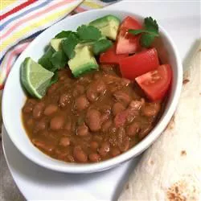

Mexican Beans

Wonderful Mexican beans to serve as a side dish with your meal.
- 2 pounds dried pinto beans
- 2 1/2 quarts water
- 1 pound bacon, coarsely chopped
- 1 medium onion, chopped
- 1 medium ripe tomato, chopped
- 1 fresh jalapeno pepper, chopped
- 1 bunch fresh cilantro, chopped
Cooking Directions
- Combine beans and water in a large pot. Bring to a boil, reduce heat, and simmer for 3 hours. Add more water if necessary while beans are cooking.
- In a large skillet, cook bacon over medium heat until it is beginning to brown. Stir in onion, and continue cooking until onion is tender. Stir in tomato, and Jalapeno, and cook for 2 to 3 minutes. Remove from heat, and stir in cilantro.
- Stir bacon and onion mixture into the beans, and continue cooking for 1 hour or until beans are soft.